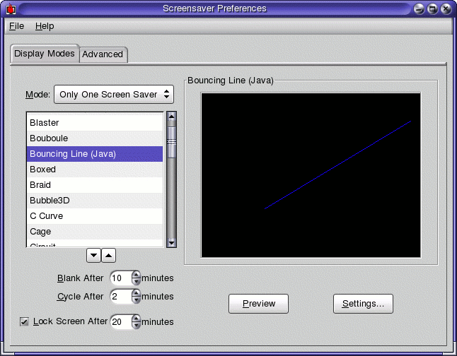
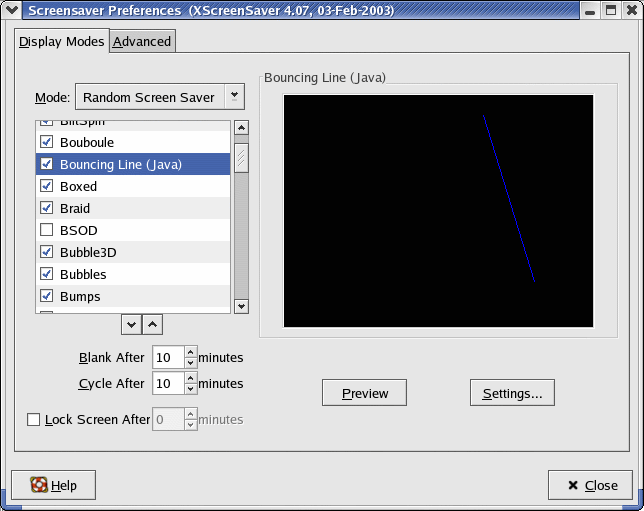
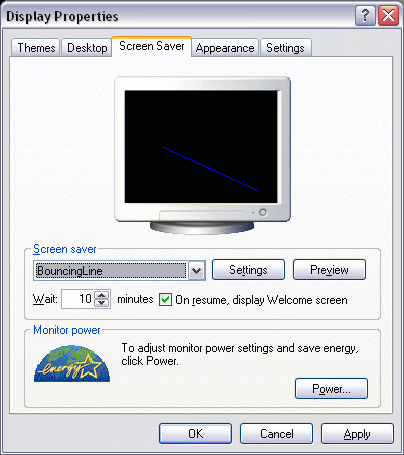
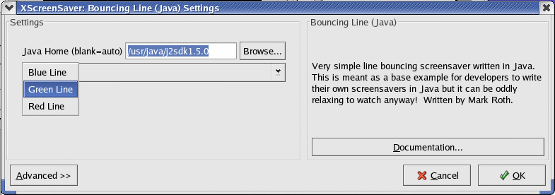

The SaverBeans Screensaver SDK (Early Access) is a Java screensaver development kit, enabling developers to create cross-platform screensavers. The developer writes a set of Java classes along with an XML description of the screensaver settings, and uses the tools in this development kit to produce a screensaver for any Java-supported OS. The resulting screensavers behave just like a native screensaver (i.e. with preview capabilities and control over settings).
The SaverBeans Screensaver SDK contains the following components:
- SaverBeans Ant Task JAR - A JAR required by screensaver projects, used to produce native screensavers.
- SaverBeans API JAR - These are redistributable files to be included with your generated screensavers.
- SaverBeans API Javadocs - Javadocs for the SaverBeans Screensaver APIs.
- Screensaver Startup Kit - Sample project including a build file, skeleton screensaver and configuration file.
The SaverBeans Screensaver SDK does not itself contain any screensavers. It is only a development kit for producing screensavers. A collection of open source Java screensavers contributed by the Java community is available in the SaverBeans Screensaver Pack project on java.net: http://screensavers.dev.java.net/
SaverBeans SDK:
Note: Performance of individual screensavers can vary greatly depending on the underlying hardware and software configuration. Factors include CPU speed, available memory, video card and available video card memory, accelleration support and video drivers, resolution, color bit depth, and other factors.
- Supported platforms
- WinME/NT/2000/XP/2003
- Sun Java Desktop System (JDS) Release 1 or greater
- SuSE Linux 7.1 or greater
- RedHat Linux 8 or greater
- Solaris 8 or greater
- System Requirements
- Windows:
- Administrator access to install screensavers
- J2SE v1.4.2 or greater (get it at http://java.com/)
- Unix:
- Administrator access to install screensavers
- J2SE v1.5.0 beta or greater (get it at http://java.sun.com/j2se/1.5.0/download.jsp)
- lesstif (provides /usr/X11R6/lib/libXm.so). Any version will do - you may need an older version if you don't have glibc2.3; such is the case with Java Desktop System for example. (Get it at http://www.lesstif.org/).
- xscreensaver (any version should do, 4.14 and greater is known to work) (Get it at http://www.jwz.org/xscreensaver/).
The CVS module for the SDK source code in the CVS repository is
src/jdic/src/incubator/screensaver. You can find instructions for checking out the source code here.To build from source, your system must meet the following requirements:
- JDK 1.4 or greater, available from http://java.sun.com/.
- Ant 1.5.1 or greater, available from http://ant.apache.org/.
Then follow the below steps to build it:
- Copy build.properties.sample to build.properties.
- Edit build.properties and follow the instructions in that file to configure for your environment.
- Run 'ant dist' to build the SDK.
Note:
To rebuild the Win32 native layer (optional), you must have a licensed copy of Visual C++ 5.0 with Service Pack 3 installed. (Without SP3 you'll get a strange error message with the linker). Execute VCVARS32.bat in the command prompt you use to build. You may need to tweak some environment settings to get everything building.
You can get Serivce Pack 3 here: http://msdn.microsoft.com/vstudio/downloads/updates/sp/vs97/default.aspx Make sure to get the FULL pack.
The binary is checked into the CVS repository so unless you change any files in the src/ant-native/win32 directory, you will not need this. If you do need to rebuild it, the relevant ant target is ant-native-win32.
Download - download the latest release of JDIC and documentation.
SaverBeans API javadoc - the SDK API specification.
Mailing List - contact relevant groups with issues.
Bug Reports and Feedback: report bugs or send feedback.
SaverBeans Screensaver Pack - A collection of community-contributed screensavers.

Screensaver properties on Java Desktop System

Screensaver properties on Red Hat Linux 9

Screensaver properties on Windows XP

Screensaver settings on Red Hat 9
Blackglass sample screen saver